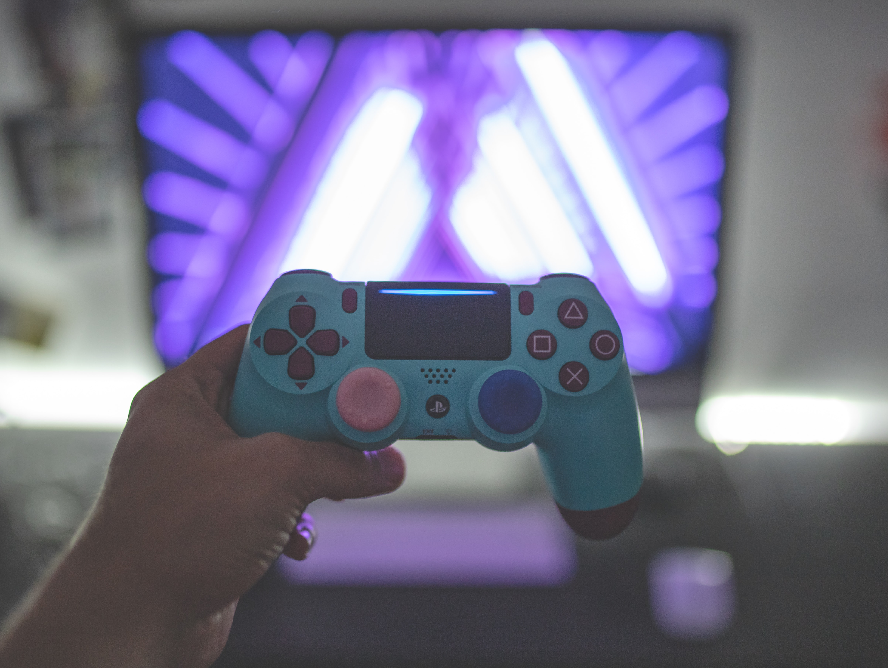
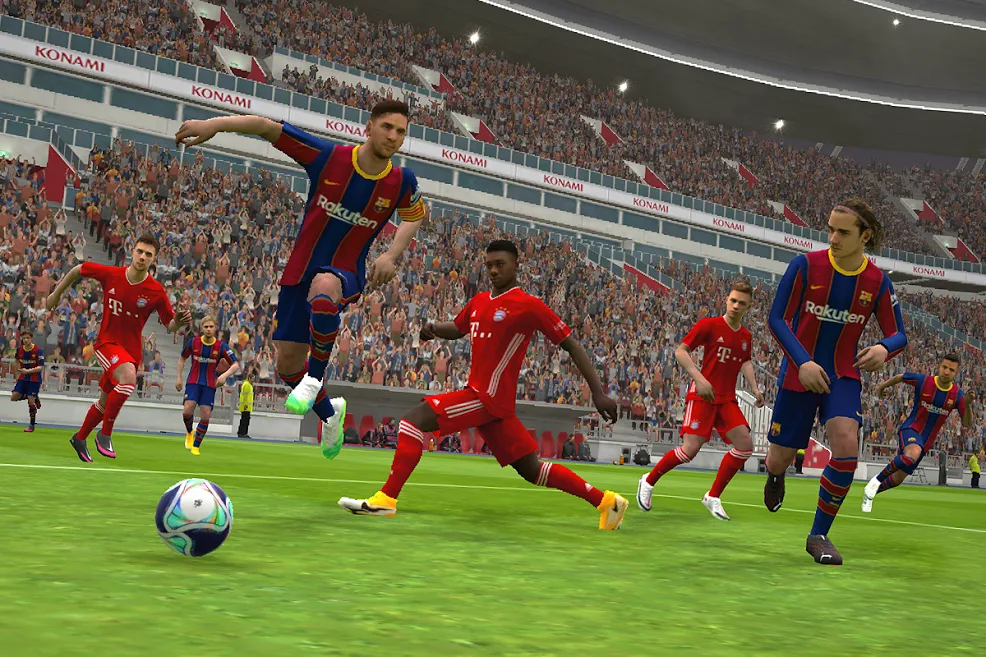
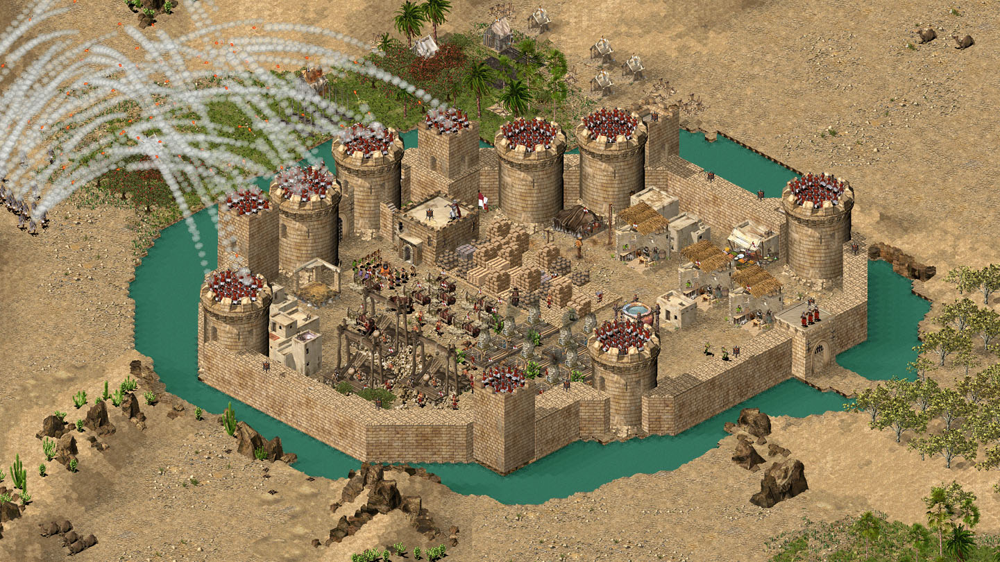
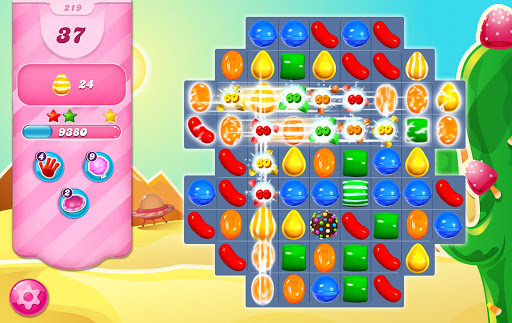
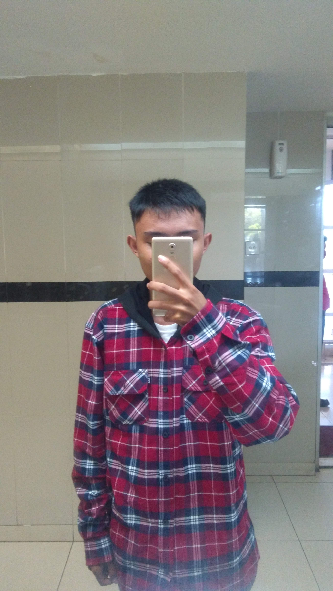

<!DOCTYPE html>
<html lang="en">
    <head>
        <meta charset="UTF-8">
        <meta name="viewport" content="width=device-width, initial-scale=1.0">
        <title>Game</title>
        <link rel="stylesheet" href="assets/css/style.css">
        <link rel="stylesheet" href="https://cdnjs.cloudflare.com/ajax/libs/font-awesome/4.7.0/css/font-awesome.min.css">
    </head>
    <body>
        <header>
            <div class="jumbotron">
                <h1> Game</h1>
                <p>Where you can play and have fun</p>
            </div>
            <nav class="menu">
                <ul id="item">
                    <li><a href="#beranda">Beranda</a></li>
                    <li><a href="#platform">Platform</a></li>
                    <li><a href="#genre">Genre</a></li>
                </ul>
                <div class="bar-icon">
                    <span class="bar"></span>
                    <span class="bar"></span>
                    <span class="bar"></span>
                </div>
            </nav>
        </header>
        <!-- <div class="flex-container-column"> -->
            <main>
                <!-- <div class="flex-container-row"> -->
                    <div id="content">
                        <article id="beranda" class="card">
                            
                            <figcaption>Photo by <a href="https://unsplash.com/@ingvar_erik?utm_source=unsplash&utm_medium=referral&utm_content=creditCopyText">Igor Karimov</a> on <a href="https://unsplash.com/s/photos/gaming?utm_source=unsplash&utm_medium=referral&utm_content=creditCopyText">Unsplash</a></figcaption>
                            <h2>Apa itu Game ?</h2>
                            <p class="indentation">Game yang di maksud di sini adalah suatu permainan dengan menggunakan 
                                media elektronik, yang dimana terdapat pemain atau user melakukan suatu kegiatan 
                                untuk mencapai tujuan yang ditentukan. Game adalah sesuatu yang dapat dimainkan dengan aturan tertentu sehingga 
                                ada yang menang dan ada yang kalah, biasanya dalam konteks tidak serius atau 
                                dengan tujuan refreshing. Suatu cara belajar yang digunakan dalam menganalisa 
                                interaksi antara sejumlah pemain maupun perorangan yang menunjukkan strategistrategi yang rasional. </p>
                        </article>
                        <article id="platform" class="card">
                            <h2>Game Platform</h2>
                            <p>Terdapat 3 platform yang biasa kita jumpai sekarang ini</p>
                            <section>
                                <h3>PC</h3>
                                
                                <figcaption>Photo by <a href="https://unsplash.com/@frdx?utm_source=unsplash&utm_medium=referral&utm_content=creditCopyText">Fredrick Tendong</a> on <a href="https://unsplash.com/s/photos/pc-gaming?utm_source=unsplash&utm_medium=referral&utm_content=creditCopyText">Unsplash</a></figcaption>
                                <p class="indentation">PC adalah sebuah platform game yang dimana game tersebut dimainkan di Komputer atau Laptop kita. Permainan komputer (bahasa Inggris: computer game) adalah permainan video yang dimainkan pada komputer pribadi, dan bukan pada konsol permainan, maupun mesin arkade. Permainan komputer telah berevolusi dari sistem grafis sederhana sampai menjadi kompleks dan mutakhir. <br> Permainan komputer rumah menjadi populer setelah insiden tahun 1983 yang membawa ke era "bedroom coder". Pada tahun 1990-an, permainan komputer rumah kehilangan minat pasar dalam jumlah besar dibandingkan dengan game konsol sebelum kebangkitannya pertengahan tahun 2000 melalui distribusi digital.</br></p>
                            </section>
                            <section>
                                <h3>Console</h3>
                                
                                <figcaption>Photo by <a href="https://unsplash.com/@mazurekphotographer?utm_source=unsplash&utm_medium=referral&utm_content=creditCopyText">Bartek Mazurek</a> on <a href="https://unsplash.com/s/photos/console-gaming?utm_source=unsplash&utm_medium=referral&utm_content=creditCopyText">Unsplash</a>
                                </figcaption>
                                <p class="indentation">Console adalah Platform game yang ditujukan oleh perangkat yang dispesifikasikan untuk bermain game saja seperti Playstation, XBOX, dan lain lain. Permainan konsol (bahasa Inggris: console game) adalah permainan video yang dimainkan pada konsol permainan, dan bukan pada komputer pribadi, maupun mesin ding-dong. <br>Konsol permainan ini biasanya terhubung pada televisi dan menghasilkan gambar serta suara. Permainan ini dimainkan dengan menggunakan alat genggam yang terhubung ke konsol permainan, yang disebut kontroler. Kontroler ini memiliki sejumlah tombol dan kontrol arah, yang masing-masing menggerakkan dan memanipulasi gambar di layar televisi.</br></p>
                            </section>
                            <section>
                                <h3>Mobile</h3>
                                
                                <figcaption>Photo by <a href="https://unsplash.com/@screenpost?utm_source=unsplash&utm_medium=referral&utm_content=creditCopyText">SCREEN POST</a> on <a href="https://unsplash.com/s/photos/mobile-gaming?utm_source=unsplash&utm_medium=referral&utm_content=creditCopyText">Unsplash</a></figcaption>
                                <p class="indentation">Mobile adalah sebuah platform game yang ditujukan untuk perangkat mobile seperti Smartphone atau tablet, platfom game ini adalah platform yang paling populer karena Game mobile terdapat pada perangkat seluler atau tablet yang mudah dibawa bawa dan game-game nya relatif gratis</p>
                            </section>
                        </article>
                        <article id="genre" class="card">
                            <h2>Game Genre</h2>
                            <p>Terdapat banyak jenis game genre namun kali ini kita hanya membahas 3 genre saja</p>
                            <section>
                                <h3>Sports</h3>
                                
                                <figcaption id="pes2021">eFootball PES 2021</figcaption>
                                <p class="indentation">Sports adalah genre game yang ditujukan untuk game-game bertema olahraga 
                                    seperti sepakbola atau bola basket. Contoh dari game ini adalah eFootball 
                                    PES 2021, FIFA 21, Madden 21 dan NBA 2K21</p>
                            </section>
                            <section>
                                <h3>Strategy</h3>
                                
                                <figcaption id="stronghold">Stronghold Crusader</figcaption>
                                <p class="indentation">Strategy adalah genre game yang dimana didalamnya terdapat tantangan logis 
                                    dan taktis. Genre ini membutuhkan banyak pengambilan keputusan didalamnya, contohnya adalah Stronghold Crusader</p>
                            </section>
                            <section>
                                <h3>Puzzle</h3>
                                
                                <figcaption id="candy-crush">Candy Crush Saga</figcaption>
                                <p class="indentation">Puzzle adalah genre yang meliputi game yang terdapat teka teki didalamnya. 
                                    Disini pemain game tersebut harus dapat memecahkan teka teki yang ada 
                                    didalamnya. Contohnya Minesweeper dan Candy Crush Saga. </p>
                            </section>
                        </article>
                    </div>
                    <aside>
                        <article class="profile card">
                            <header>
                                <h2>Tentang Penulis</h2>
                                <figure>
                                    
                                </figure>
                            </header>
                            <section>
                                <h3>Profil</h3>
                                <table class="bio">
                                    <tr>
                                        <th>Nama</th>
                                        <td>Achmad Syarief Hidayatullah</td>
                                    </tr>
                                    <tr>
                                        <th>Username</th>
                                        <td>achmadsyariefha</td>
                                    </tr>
                                    <tr>
                                        <th>Email</th>
                                        <td>achmad.syarif.hidayatullah@gmail.com</td>
                                    </tr>
                                    <tr>
                                        <th>No. Telp</th>
                                        <td>+6281243264206</td>
                                    </tr>
                                </table>
                            </section>
                        </article>
                    </aside>
                <!-- </div> -->
            </main>
        <!-- </div> -->
        <footer>
            <p>Copyright &#169; 2021, Achmad Syarief Hidayatullah Amiruddin</p>
        </footer>
        <script src="assets/js/game.js"></script>
    </body>
</html>